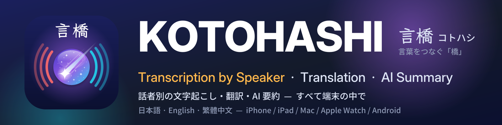
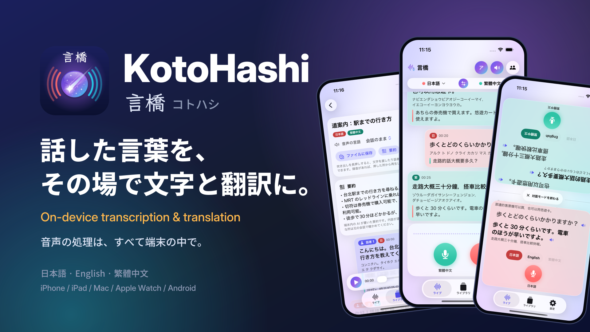

言橋 / KotoHashi
日本語｜話した言葉をその場で文字にして、翻訳し、読み上げるアプリです。日本語・英語・繁體中文（台湾）に対応し、音声の処理はすべて端末の中で行います。
English | An app that turns speech into text on the spot, translates it, and reads it aloud. It supports Japanese, English, and Traditional Chinese (Taiwan), and all audio processing stays on your device.

サポート / Support / 支援: github.com/nu-sx/KotoHashi/issues